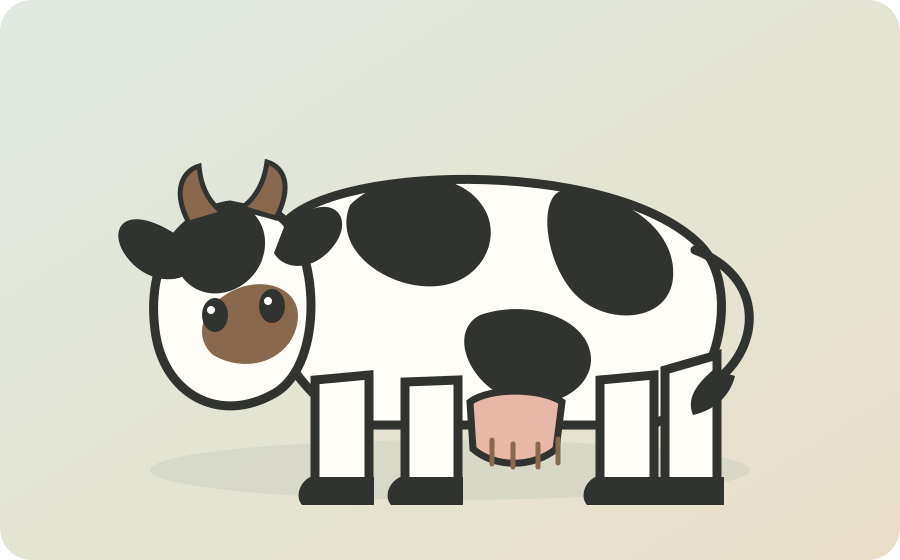

Aberdeen Angus
Naam van het ras
Herkomst
noorden van schotland
Geschiedenis
in 1800 had her ras de naam Angus doddies. in 1824 begon een man onder de naam William McCombie of Tillyfour het ras te optimaliseren en te exporteren naar andere landen
Uiterlijk
Kleur
voornamelijk een zwart vacht (black Angus) maar rode vacht komt ook voor (red Angus)
Grootte en gewicht
de koeien wegen rond de 550 kilo, en de stieren wegen rond de 850 kilo
Karakter
rustig en betrouwbaar
Voeding
voornamelijk ruw voer zoals gras en kruiden en ze worden in de winter bijgevoerd met krachtvoer
Gebruik / doel
ze worden voor het vlees gehouden
Bijzondere kenmerken
het ras heeft zich over de hele wereld verspreidt door middel van zijn aanpassingen vermogen en weerstand tegen barre omstandigheden
Levensduur
15 tot 20 jaar
Afbeelding
